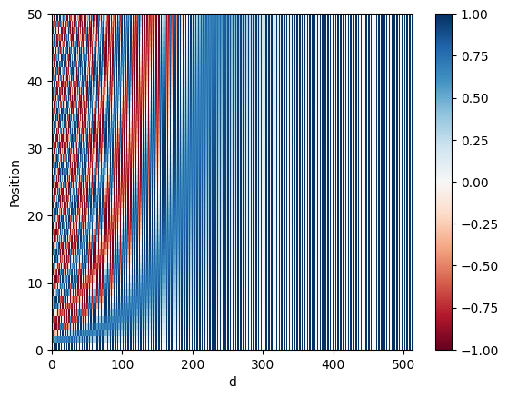
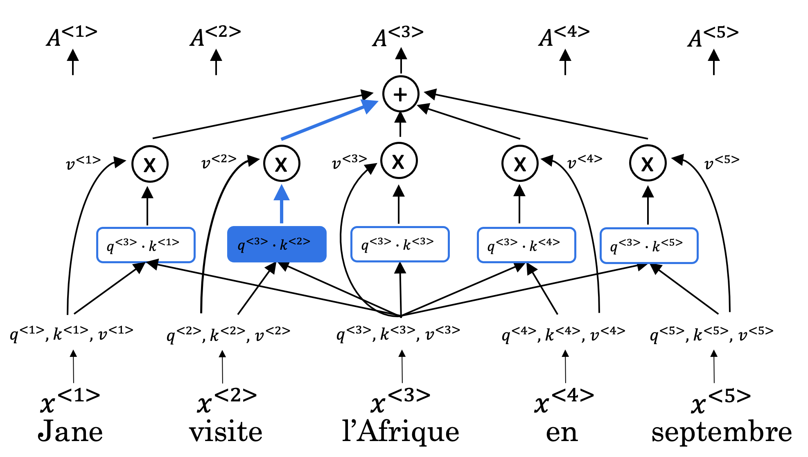
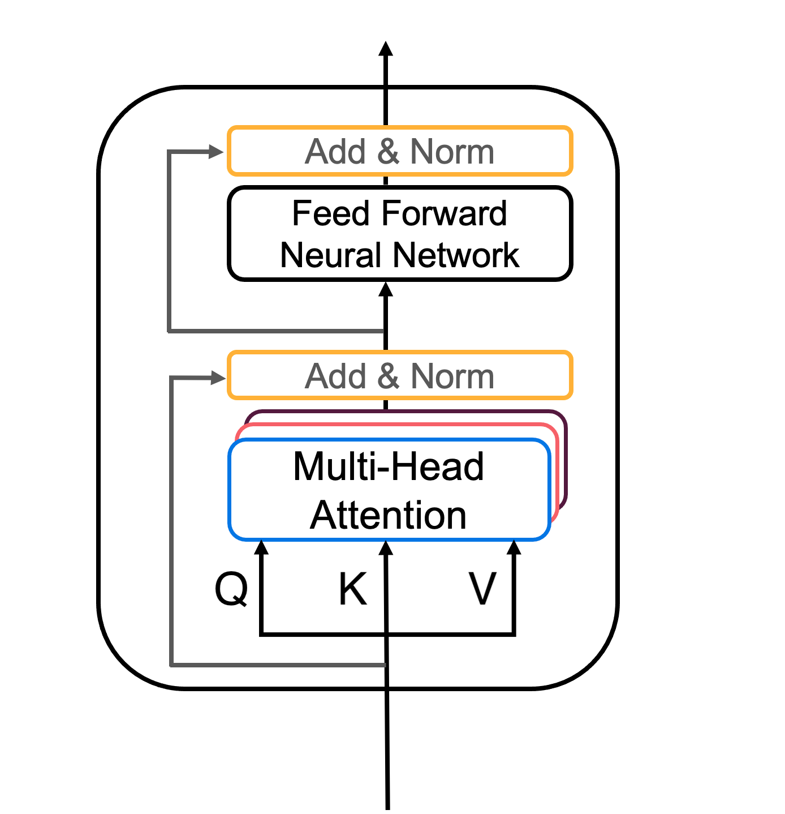
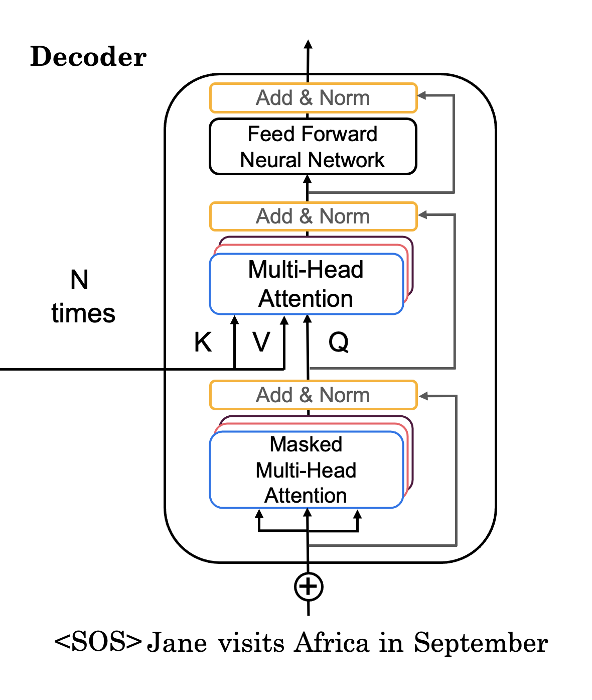
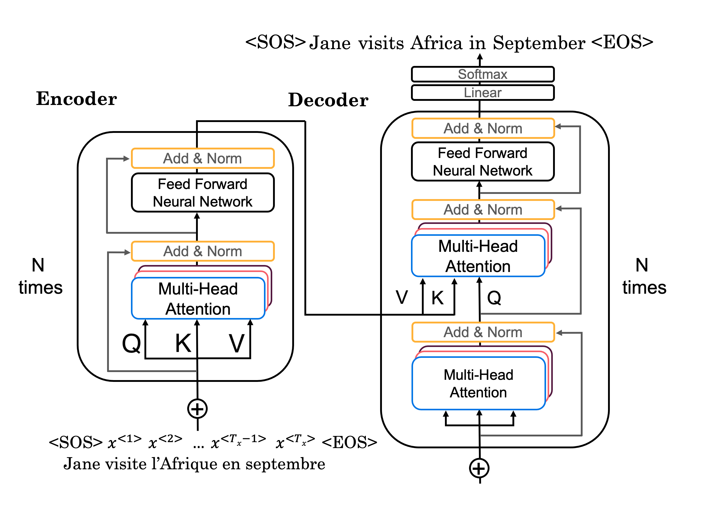

Transformer Network#
Welcome to Week 4’s assignment, the last assignment of Course 5 of the Deep Learning Specialization! And congratulations on making it to the last assignment of the entire Deep Learning Specialization - you’re almost done!
Earlier in the course, you’ve implemented sequential neural networks such as RNNs, GRUs, and LSTMs. In this notebook you’ll explore the Transformer architecture, a neural network that takes advantage of parallel processing and allows you to substantially speed up the training process.
After this assignment you’ll be able to:
Create positional encodings to capture sequential relationships in data
Calculate scaled dot-product self-attention with word embeddings
Implement masked multi-head attention
Build and train a Transformer model
For the last time, let’s get started!
Important Note on Submission to the AutoGrader#
Before submitting your assignment to the AutoGrader, please make sure you are not doing the following:
You have not added any extra
printstatement(s) in the assignment.You have not added any extra code cell(s) in the assignment.
You have not changed any of the function parameters.
You are not using any global variables inside your graded exercises. Unless specifically instructed to do so, please refrain from it and use the local variables instead.
You are not changing the assignment code where it is not required, like creating extra variables.
If you do any of the following, you will get something like, Grader Error: Grader feedback not found (or similarly unexpected) error upon submitting your assignment. Before asking for help/debugging the errors in your assignment, check for these first. If this is the case, and you don’t remember the changes you have made, you can get a fresh copy of the assignment by following these instructions.
Packages#
Run the following cell to load the packages you’ll need.
### v1.6
import tensorflow as tf
import time
import numpy as np
import matplotlib.pyplot as plt
from tensorflow.keras.layers import Embedding, MultiHeadAttention, Dense, Input, Dropout, LayerNormalization
1 - Positional Encoding#
In sequence to sequence tasks, the relative order of your data is extremely important to its meaning. When you were training sequential neural networks such as RNNs, you fed your inputs into the network in order. Information about the order of your data was automatically fed into your model. However, when you train a Transformer network using multi-head attention, you feed your data into the model all at once. While this dramatically reduces training time, there is no information about the order of your data. This is where positional encoding is useful - you can specifically encode the positions of your inputs and pass them into the network using these sine and cosine formulas:
$$ PE_{(pos, 2i+1)}= cos\left(\frac{pos}{{10000}^{\frac{2i}{d}}}\right) \tag{2}$$
\(d\) is the dimension of the word embedding and positional encoding
\(pos\) is the position of the word.
\(k\) refers to each of the different dimensions in the positional encodings, with \(i\) equal to \(k\) \(//\) \(2\).
To develop some intuition about positional encodings, you can think of them broadly as a feature that contains the information about the relative positions of words. The sum of the positional encoding and word embedding is ultimately what is fed into the model. If you just hard code the positions in, say by adding a matrix of 1’s or whole numbers to the word embedding, the semantic meaning is distorted. Conversely, the values of the sine and cosine equations are small enough (between -1 and 1) that when you add the positional encoding to a word embedding, the word embedding is not significantly distorted, and is instead enriched with positional information. Using a combination of these two equations helps your Transformer network attend to the relative positions of your input data. This was a short discussion on positional encodings, but to develop further intuition, check out the Positional Encoding Ungraded Lab.
Note: In the lectures Andrew uses vertical vectors, but in this assignment all vectors are horizontal. All matrix multiplications should be adjusted accordingly.
1.1 - Sine and Cosine Angles#
Notice that even though the sine and cosine positional encoding equations take in different arguments (2i versus 2i+1, or even versus odd numbers) the inner terms for both equations are the same: $\(\theta(pos, i, d) = \frac{pos}{10000^{\frac{2i}{d}}} \tag{3}\)$
Consider the inner term as you calculate the positional encoding for a word in a sequence.
\(PE_{(pos, 0)}= sin\left(\frac{pos}{{10000}^{\frac{0}{d}}}\right)\), since solving 2i = 0 gives i = 0
\(PE_{(pos, 1)}= cos\left(\frac{pos}{{10000}^{\frac{0}{d}}}\right)\), since solving 2i + 1 = 1 gives i = 0
The angle is the same for both! The angles for \(PE_{(pos, 2)}\) and \(PE_{(pos, 3)}\) are the same as well, since for both, i = 1 and therefore the inner term is \(\left(\frac{pos}{{10000}^{\frac{2}{d}}}\right)\). This relationship holds true for all paired sine and cosine curves:
k |
|
|
|
|
|
|
|
|---|---|---|---|---|---|---|---|
encoding(0) = |
[\(sin(\theta(0, 0, d))\) |
\(cos(\theta(0, 0, d))\) |
\(sin(\theta(0, 1, d))\) |
\(cos(\theta(0, 1, d))\) |
… |
\(sin(\theta(0, d//2, d))\) |
\(cos(\theta(0, d//2, d))\)] |
encoding(1) = |
[\(sin(\theta(1, 0, d))\) |
\(cos(\theta(1, 0, d))\) |
\(sin(\theta(1, 1, d))\) |
\(cos(\theta(1, 1, d))\) |
… |
\(sin(\theta(1, d//2, d))\) |
\(cos(\theta(1, d//2, d))\)] |
… |
|||||||
encoding(pos) = |
[\(sin(\theta(pos, 0, d))\) |
\(cos(\theta(pos, 0, d))\) |
\(sin(\theta(pos, 1, d))\) |
\(cos(\theta(pos, 1, d))\) |
… |
\(sin(\theta(pos, d//2, d))\) |
\(cos(\theta(pos, d//2, d))]\) |
Exercise 1 - get_angles#
Implement the function get_angles() to calculate the possible angles for the sine and cosine positional encodings
Hints
If
k = [0, 1, 2, 3, 4, 5], then,imust bei = [0, 0, 1, 1, 2, 2]i = k//2
# UNQ_C1 (UNIQUE CELL IDENTIFIER, DO NOT EDIT)
# GRADED FUNCTION: get_angles
import numpy as np
def get_angles(pos, k, d):
"""
Get the angles for the positional encoding
Arguments:
pos -- Column vector containing the positions [[0], [1], ...,[N-1]] (shape: [N, 1])
k -- Row vector containing the dimension span [[0, 1, 2, ..., d-1]] (shape: [1, d])
d -- Integer, encoding dimension
Returns:
angles -- (pos, d) numpy array of computed angles
"""
### START CODE HERE ###
# i is just k (the dimension indices)
i = k
# Compute the angles as defined in the Transformer paper
# angle_rates = pos / (10000^(2*(i//2)/d))
angles = pos / np.power(10000, (2 * (i // 2)) / np.float32(d))
### END CODE HERE ###
return angles
from public_tests import *
get_angles_test(get_angles)
# Example
position = 4
d_model = 8
pos_m = np.arange(position)[:, np.newaxis]
dims = np.arange(d_model)[np.newaxis, :]
get_angles(pos_m, dims, d_model)
All tests passed
array([[0.e+00, 0.e+00, 0.e+00, 0.e+00, 0.e+00, 0.e+00, 0.e+00, 0.e+00],
[1.e+00, 1.e+00, 1.e-01, 1.e-01, 1.e-02, 1.e-02, 1.e-03, 1.e-03],
[2.e+00, 2.e+00, 2.e-01, 2.e-01, 2.e-02, 2.e-02, 2.e-03, 2.e-03],
[3.e+00, 3.e+00, 3.e-01, 3.e-01, 3.e-02, 3.e-02, 3.e-03, 3.e-03]])
1.2 - Sine and Cosine Positional Encodings#
Now you can use the angles you computed to calculate the sine and cosine positional encodings.
$$ PE_{(pos, 2i+1)}= cos\left(\frac{pos}{{10000}^{\frac{2i}{d}}}\right) $$
Exercise 2 - positional_encoding#
Implement the function positional_encoding() to calculate the sine and cosine positional encodings
Reminder: Use the sine equation when \(i\) is an even number and the cosine equation when \(i\) is an odd number.
Additional Hints#
You may find np.newaxis useful depending on the implementation you choose.
# UNQ_C2 (UNIQUE CELL IDENTIFIER, DO NOT EDIT)
# GRADED FUNCTION: positional_encoding
import numpy as np
import tensorflow as tf
def positional_encoding(positions, d):
"""
Precomputes a matrix with all the positional encodings.
Arguments:
positions (int) -- Maximum number of positions to be encoded
d (int) -- Encoding size
Returns:
pos_encoding -- (1, positions, d) A matrix with the positional encodings
"""
### START CODE HERE ###
# Step 1: Compute the angle matrix
pos = np.arange(positions)[:, np.newaxis] # shape (positions, 1)
k = np.arange(d)[np.newaxis, :] # shape (1, d)
angle_rads = get_angles(pos, k, d) # shape (positions, d)
# Step 2: Apply sin to even indices (2i)
angle_rads[:, 0::2] = np.sin(angle_rads[:, 0::2])
# Step 3: Apply cos to odd indices (2i+1)
angle_rads[:, 1::2] = np.cos(angle_rads[:, 1::2])
### END CODE HERE ###
# Step 4: Add batch dimension
pos_encoding = angle_rads[np.newaxis, ...]
return tf.cast(pos_encoding, dtype=tf.float32)
# UNIT TEST
positional_encoding_test(positional_encoding, get_angles)
All tests passed
Nice work calculating the positional encodings! Now you can visualize them.
pos_encoding = positional_encoding(50, 512)
print (pos_encoding.shape)
plt.pcolormesh(pos_encoding[0], cmap='RdBu')
plt.xlabel('d')
plt.xlim((0, 512))
plt.ylabel('Position')
plt.colorbar()
plt.show()
(1, 50, 512)

Each row represents a positional encoding - notice how none of the rows are identical! You have created a unique positional encoding for each of the words.
2 - Masking#
There are two types of masks that are useful when building your Transformer network: the padding mask and the look-ahead mask. Both help the softmax computation give the appropriate weights to the words in your input sentence.
2.1 - Padding Mask#
Oftentimes your input sequence will exceed the maximum length of a sequence your network can process. Let’s say the maximum length of your model is five, it is fed the following sequences:
[["Do", "you", "know", "when", "Jane", "is", "going", "to", "visit", "Africa"],
["Jane", "visits", "Africa", "in", "September" ],
["Exciting", "!"]
]
which might get vectorized as:
[[ 71, 121, 4, 56, 99, 2344, 345, 1284, 15],
[ 56, 1285, 15, 181, 545],
[ 87, 600]
]
When passing sequences into a transformer model, it is important that they are of uniform length. You can achieve this by padding the sequence with zeros, and truncating sentences that exceed the maximum length of your model:
[[ 71, 121, 4, 56, 99],
[ 2344, 345, 1284, 15, 0],
[ 56, 1285, 15, 181, 545],
[ 87, 600, 0, 0, 0],
]
Sequences longer than the maximum length of five will be truncated, and zeros will be added to the truncated sequence to achieve uniform length. Similarly, for sequences shorter than the maximum length, zeros will also be added for padding. However, these zeros will affect the softmax calculation - this is when a padding mask comes in handy! You will need to define a boolean mask that specifies to which elements you must attend(1) and which elements you must ignore(0). Later you will use that mask to set all the zeros in the sequence to a value close to negative infinity (-1e9). We’ll implement this for you so you can get to the fun of building the Transformer network! 😇 Just make sure you go through the code so you can correctly implement padding when building your model.
After masking, your input should go from [87, 600, 0, 0, 0] to [87, 600, -1e9, -1e9, -1e9], so that when you take the softmax, the zeros don’t affect the score.
The MultiheadAttention layer implemented in Keras, uses this masking logic.
Note: The below function only creates the mask of an already padded sequence. Later in this week, you’ll go through some Labs on Transformer applications, where you’ll be introduced to TensorFlow Tokenizer and Hugging Face Tokenizer, which internally handle padding (and truncating) the input sequence.
def create_padding_mask(decoder_token_ids):
"""
Creates a matrix mask for the padding cells
Arguments:
decoder_token_ids -- (n, m) matrix
Returns:
mask -- (n, 1, m) binary tensor
"""
seq = 1 - tf.cast(tf.math.equal(decoder_token_ids, 0), tf.float32)
# add extra dimensions to add the padding
# to the attention logits.
# this will allow for broadcasting later when comparing sequences
return seq[:, tf.newaxis, :]
x = tf.constant([[7., 6., 0., 0., 1.], [1., 2., 3., 0., 0.], [0., 0., 0., 4., 5.]])
print(create_padding_mask(x))
tf.Tensor(
[[[1. 1. 0. 0. 1.]]
[[1. 1. 1. 0. 0.]]
[[0. 0. 0. 1. 1.]]], shape=(3, 1, 5), dtype=float32)
If we multiply (1 - mask) by -1e9 and add it to the sample input sequences, the zeros are essentially set to negative infinity. Notice the difference when taking the softmax of the original sequence and the masked sequence:
print(tf.keras.activations.softmax(x))
print(tf.keras.activations.softmax(x + (1 - create_padding_mask(x)) * -1.0e9))
tf.Tensor(
[[7.2876638e-01 2.6809821e-01 6.6454895e-04 6.6454895e-04 1.8064313e-03]
[8.4437370e-02 2.2952458e-01 6.2391245e-01 3.1062771e-02 3.1062771e-02]
[4.8541022e-03 4.8541022e-03 4.8541022e-03 2.6502505e-01 7.2041267e-01]], shape=(3, 5), dtype=float32)
tf.Tensor(
[[[7.2973621e-01 2.6845497e-01 0.0000000e+00 0.0000000e+00 1.8088353e-03]
[2.4472848e-01 6.6524088e-01 0.0000000e+00 0.0000000e+00 9.0030566e-02]
[6.6483538e-03 6.6483538e-03 0.0000000e+00 0.0000000e+00 9.8670328e-01]]
[[7.3057157e-01 2.6876229e-01 6.6619506e-04 0.0000000e+00 0.0000000e+00]
[9.0030566e-02 2.4472848e-01 6.6524088e-01 0.0000000e+00 0.0000000e+00]
[3.3333334e-01 3.3333334e-01 3.3333334e-01 0.0000000e+00 0.0000000e+00]]
[[0.0000000e+00 0.0000000e+00 0.0000000e+00 2.6894143e-01 7.3105854e-01]
[0.0000000e+00 0.0000000e+00 0.0000000e+00 5.0000000e-01 5.0000000e-01]
[0.0000000e+00 0.0000000e+00 0.0000000e+00 2.6894143e-01 7.3105854e-01]]], shape=(3, 3, 5), dtype=float32)
2.2 - Look-ahead Mask#
The look-ahead mask follows similar intuition. In training, you will have access to the complete correct output of your training example. The look-ahead mask helps your model pretend that it correctly predicted a part of the output and see if, without looking ahead, it can correctly predict the next output.
For example, if the expected correct output is [1, 2, 3] and you wanted to see if given that the model correctly predicted the first value it could predict the second value, you would mask out the second and third values. So you would input the masked sequence [1, -1e9, -1e9] and see if it could generate [1, 2, -1e9].
Just because you’ve worked so hard, we’ll also implement this mask for you 😇😇. Again, take a close look at the code so you can effectively implement it later.
def create_look_ahead_mask(sequence_length):
"""
Returns a lower triangular matrix filled with ones
Arguments:
sequence_length -- matrix size
Returns:
mask -- (size, size) tensor
"""
mask = tf.linalg.band_part(tf.ones((1, sequence_length, sequence_length)), -1, 0)
return mask
x = tf.random.uniform((1, 3))
temp = create_look_ahead_mask(x.shape[1])
temp
<tf.Tensor: shape=(1, 3, 3), dtype=float32, numpy=
array([[[1., 0., 0.],
[1., 1., 0.],
[1., 1., 1.]]], dtype=float32)>
3 - Self-Attention#
As the authors of the Transformers paper state, “Attention is All You Need”.

The use of self-attention paired with traditional convolutional networks allows for parallelization which speeds up training. You will implement scaled dot product attention which takes in a query, key, value, and a mask as inputs to return rich, attention-based vector representations of the words in your sequence. This type of self-attention can be mathematically expressed as: $\( \text { Attention }(Q, K, V)=\operatorname{softmax}\left(\frac{Q K^{T}}{\sqrt{d_{k}}}+{M}\right) V\tag{4}\ \)$
\(Q\) is the matrix of queries
\(K\) is the matrix of keys
\(V\) is the matrix of values
\(M\) is the optional mask you choose to apply
\({d_k}\) is the dimension of the keys, which is used to scale everything down so the softmax doesn’t explode
Exercise 3 - scaled_dot_product_attention#
Implement the function scaled_dot_product_attention() to create attention-based representations.
Reminder: The boolean mask parameter can be passed in as none or as either padding or look-ahead.
Multiply (1. - mask) by -1e9 before applying the softmax.
Additional Hints
You may find tf.matmul useful for matrix multiplication.
# UNQ_C3 (UNIQUE CELL IDENTIFIER, DO NOT EDIT)
# GRADED FUNCTION: scaled_dot_product_attention
import tensorflow as tf
def scaled_dot_product_attention(q, k, v, mask):
"""
Calculate the scaled dot-product attention.
Arguments:
q -- query tensor (..., seq_len_q, depth)
k -- key tensor (..., seq_len_k, depth)
v -- value tensor (..., seq_len_v, depth_v)
mask -- (optional) Float tensor broadcastable to (..., seq_len_q, seq_len_k)
Used to mask out padding tokens or future positions in decoding.
Returns:
output -- attention output (..., seq_len_q, depth_v)
attention_weights -- attention weights (..., seq_len_q, seq_len_k)
"""
### START CODE HERE ###
# Step 1: MatMul Q and K^T
matmul_qk = tf.matmul(q, k, transpose_b=True) # (..., seq_len_q, seq_len_k)
# Step 2: Scale matmul_qk
dk = tf.cast(tf.shape(k)[-1], tf.float32)
scaled_attention_logits = matmul_qk / tf.math.sqrt(dk)
# Step 3: Add mask (if provided)
if mask is not None:
scaled_attention_logits += (mask * -1e9) # large negative number → masked positions ≈ 0 after softmax
# Step 4: Softmax over last axis (seq_len_k)
attention_weights = tf.nn.softmax(scaled_attention_logits, axis=-1) # (..., seq_len_q, seq_len_k)
# Step 5: Multiply weights by values
output = tf.matmul(attention_weights, v) # (..., seq_len_q, depth_v)
### END CODE HERE ###
return output, attention_weights
# UNIT TEST
# scaled_dot_product_attention_test(scaled_dot_product_attention)
Excellent work! You can now implement self-attention. With that, you can start building the encoder block!
4 - Encoder#
The Transformer Encoder layer pairs self-attention and convolutional neural network style of processing to improve the speed of training and passes K and V matrices to the Decoder, which you’ll build later in the assignment. In this section of the assignment, you will implement the Encoder by pairing multi-head attention and a feed forward neural network (Figure 2a).

MultiHeadAttentionyou can think of as computing the self-attention several times to detect different features.Feed forward neural network contains two Dense layers which we’ll implement as the function
FullyConnected
Your input sentence first passes through a multi-head attention layer, where the encoder looks at other words in the input sentence as it encodes a specific word. The outputs of the multi-head attention layer are then fed to a feed forward neural network. The exact same feed forward network is independently applied to each position.
For the
MultiHeadAttentionlayer, you will use the Keras implementation. If you’re curious about how to split the query matrix Q, key matrix K, and value matrix V into different heads, you can look through the implementation.You will also use the Sequential API with two dense layers to built the feed forward neural network layers.
Note: In Python, the __call__ method allows you to call an object like a function. TensorFlow leverages this by providing a call function within Keras layers. This means you can use a layer like a_Layer(arg) and TensorFlow will internally execute a_Layer.call(arg) to process your data. This design makes it intuitive to apply layers within your TensorFlow models.
def FullyConnected(embedding_dim, fully_connected_dim):
return tf.keras.Sequential([
tf.keras.layers.Dense(fully_connected_dim, activation='relu'), # (batch_size, seq_len, dff)
tf.keras.layers.Dense(embedding_dim) # (batch_size, seq_len, embedding_dim)
])
4.1 Encoder Layer#
Now you can pair multi-head attention and feed forward neural network together in an encoder layer! You will also use residual connections and layer normalization to help speed up training (Figure 2a).
Exercise 4 - EncoderLayer#
Implement EncoderLayer() using the call() method
In this exercise, you will implement one encoder block (Figure 2) using the call() method. The function should perform the following steps:
You will pass the Q, V, K matrices and a boolean mask to a multi-head attention layer. Remember that to compute self-attention Q, V and K should be the same. Set the default values for
return_attention_scoresandtraining. You will also perform Dropout in this multi-head attention layer during training.Now add a skip connection by adding your original input
xand the output of the your multi-head attention layer.After adding the skip connection, pass the output through the first normalization layer.
Finally, repeat steps 1-3 but with the feed forward neural network with a dropout layer instead of the multi-head attention layer.
Additional Hints (Click to expand)
The
__init__method creates all the layers that will be accesed by the thecallmethod. Wherever you want to use a layer defined inside the__init__method you will have to use the syntaxself.[insert layer name].You will find the documentation of MultiHeadAttention helpful. Note that if query, key and value are the same, then this function performs self-attention.
The call arguments for
self.mhaare (Where B is for batch_size, T is for target sequence shapes, and S is output_shape):
query: Query Tensor of shape (B, T, dim).value: Value Tensor of shape (B, S, dim).key: Optional key Tensor of shape (B, S, dim). If not given, will use value for both key and value, which is the most common case.attention_mask: a boolean mask of shape (B, T, S), that prevents attention to certain positions. The boolean mask specifies which query elements can attend to which key elements, 1 indicates attention and 0 indicates no attention. Broadcasting can happen for the missing batch dimensions and the head dimension.return_attention_scores: A boolean to indicate whether the output should be (attention_output, attention_scores) if True, or attention_output if False. Defaults to False.training: Python boolean indicating whether the layer should behave in training mode (adding dropout) or in inference mode (no dropout). Defaults to either using the training mode of the parent layer/model, or False (inference) if there is no parent layer. Take a look at tf.keras.layers.Dropout for more details (Additional reading in Keras FAQ)
# UNQ_C4 (UNIQUE CELL IDENTIFIER, DO NOT EDIT)
# GRADED FUNCTION: EncoderLayer
import tensorflow as tf
from tensorflow.keras.layers import LayerNormalization, Dropout, MultiHeadAttention
class EncoderLayer(tf.keras.layers.Layer):
"""
The encoder layer consists of:
- Multi-head self-attention
- Feed-forward network (position-wise dense)
Each sublayer includes residual connection + layer normalization.
"""
def __init__(self, embedding_dim, num_heads, fully_connected_dim,
dropout_rate=0.1, layernorm_eps=1e-6):
super(EncoderLayer, self).__init__()
# Multi-head attention
self.mha = tf.keras.layers.MultiHeadAttention(
num_heads=num_heads,
key_dim=embedding_dim,
dropout=dropout_rate
)
# Feed-forward network (custom defined elsewhere)
self.ffn = FullyConnected(
embedding_dim=embedding_dim,
fully_connected_dim=fully_connected_dim
)
# Layer normalizations
self.layernorm1 = LayerNormalization(epsilon=layernorm_eps)
self.layernorm2 = LayerNormalization(epsilon=layernorm_eps)
# Dropout after feed-forward
self.dropout_ffn = Dropout(dropout_rate)
def call(self, x, training, mask):
"""
Forward pass for the Encoder Layer
Arguments:
x -- Tensor of shape (batch_size, input_seq_len, embedding_dim)
training -- Boolean, for dropout layers
mask -- Boolean mask tensor to ignore padded tokens
Returns:
encoder_layer_out -- Tensor of shape (batch_size, input_seq_len, embedding_dim)
"""
### START CODE HERE ###
# Step 1: Multi-head self-attention
self_mha_output = self.mha(
query=x, key=x, value=x, attention_mask=mask, training=training
) # (batch_size, input_seq_len, embedding_dim)
# Step 2: Add & normalize (residual connection)
skip_x_attention = self.layernorm1(x + self_mha_output)
# Step 3: Feed-forward network
ffn_output = self.ffn(skip_x_attention) # (batch_size, input_seq_len, embedding_dim)
# Step 4: Dropout
ffn_output = self.dropout_ffn(ffn_output, training=training)
# Step 5: Add & normalize (final output)
encoder_layer_out = self.layernorm2(skip_x_attention + ffn_output)
### END CODE HERE ###
return encoder_layer_out
# UNIT TEST
# EncoderLayer_test(EncoderLayer)
4.2 - Full Encoder#
Awesome job! You have now successfully implemented positional encoding, self-attention, and an encoder layer - give yourself a pat on the back. Now you’re ready to build the full Transformer Encoder (Figure 2b), where you will embed your input and add the positional encodings you calculated. You will then feed your encoded embeddings to a stack of Encoder layers.

Exercise 5 - Encoder#
Complete the Encoder() function using the call() method to embed your input, add positional encoding, and implement multiple encoder layers.
In this exercise, you will initialize your Encoder with an Embedding layer, positional encoding, and multiple EncoderLayers. Your call() method will perform the following steps:
Pass your input through the Embedding layer.
Scale your embedding by multiplying it by the square root of your embedding dimension. Remember to cast the embedding dimension to data type
tf.float32before computing the square root.Add the position encoding: self.pos_encoding
[:, :seq_len, :]to your embedding.Pass the encoded embedding through a dropout layer, remembering to use the
trainingparameter to set the model training mode.Pass the output of the dropout layer through the stack of encoding layers using a for loop.
# UNQ_C5 (UNIQUE CELL IDENTIFIER, DO NOT EDIT)
# GRADED FUNCTION: Encoder
import tensorflow as tf
from tensorflow.keras.layers import Embedding, Dropout
class Encoder(tf.keras.layers.Layer):
"""
The entire Encoder:
- Embedding + positional encoding
- Stack of N identical EncoderLayers
"""
def __init__(self, num_layers, embedding_dim, num_heads, fully_connected_dim,
input_vocab_size, maximum_position_encoding,
dropout_rate=0.1, layernorm_eps=1e-6):
super(Encoder, self).__init__()
self.embedding_dim = embedding_dim
self.num_layers = num_layers
# Step 1: Token Embedding
self.embedding = Embedding(input_vocab_size, self.embedding_dim)
# Step 2: Positional Encoding
self.pos_encoding = positional_encoding(maximum_position_encoding, self.embedding_dim)
# Step 3: Stack of Encoder Layers
self.enc_layers = [
EncoderLayer(
embedding_dim=self.embedding_dim,
num_heads=num_heads,
fully_connected_dim=fully_connected_dim,
dropout_rate=dropout_rate,
layernorm_eps=layernorm_eps
)
for _ in range(self.num_layers)
]
# Step 4: Dropout
self.dropout = Dropout(dropout_rate)
def call(self, x, training, mask):
"""
Forward pass for the Encoder.
Arguments:
x -- (batch_size, input_seq_len)
training -- Boolean, enables dropout
mask -- Boolean mask to avoid attending to padding tokens
Returns:
x -- (batch_size, input_seq_len, embedding_dim)
"""
seq_len = tf.shape(x)[1]
### START CODE HERE ###
# Step 1: Token Embedding
x = self.embedding(x) # (batch_size, input_seq_len, embedding_dim)
# Step 2: Scale embeddings
x *= tf.math.sqrt(tf.cast(self.embedding_dim, tf.float32))
# Step 3: Add positional encoding
x += self.pos_encoding[:, :seq_len, :]
# Step 4: Apply dropout
x = self.dropout(x, training=training)
# Step 5: Pass through N encoder layers
for i in range(self.num_layers):
x = self.enc_layers[i](x, training=training, mask=mask)
### END CODE HERE ###
return x # (batch_size, input_seq_len, embedding_dim)
# UNIT TEST
# Encoder_test(Encoder)
5 - Decoder#
The Decoder layer takes the K and V matrices generated by the Encoder and computes the second multi-head attention layer with the Q matrix from the output (Figure 3a).

5.1 - Decoder Layer#
Again, you’ll pair multi-head attention with a feed forward neural network, but this time you’ll implement two multi-head attention layers. You will also use residual connections and layer normalization to help speed up training (Figure 3a).
Exercise 6 - DecoderLayer#
Implement DecoderLayer() using the call() method
Block 1 is a multi-head attention layer with a residual connection, and look-ahead mask. Like in the
EncoderLayer, Dropout is defined within the multi-head attention layer.Block 2 will take into account the output of the Encoder, so the multi-head attention layer will receive K and V from the encoder, and Q from the Block 1. You will then apply a normalization layer and a residual connection, just like you did before with the
EncoderLayer.Finally, Block 3 is a feed forward neural network with dropout and normalization layers and a residual connection.
Additional Hints:
The first two blocks are fairly similar to the EncoderLayer except you will return
attention_scoreswhen computing self-attention
# UNQ_C6 (UNIQUE CELL IDENTIFIER, DO NOT EDIT)
# GRADED FUNCTION: DecoderLayer
import tensorflow as tf
from tensorflow.keras.layers import MultiHeadAttention, LayerNormalization, Dropout
class DecoderLayer(tf.keras.layers.Layer):
"""
The decoder layer is composed of:
1. Masked multi-head self-attention (for autoregressive generation)
2. Encoder–decoder multi-head attention (attending to encoder outputs)
3. Feed-forward network
Each sublayer includes a residual connection and layer normalization.
"""
def __init__(self, embedding_dim, num_heads, fully_connected_dim, dropout_rate=0.1, layernorm_eps=1e-6):
super(DecoderLayer, self).__init__()
# Block 1: Masked Multi-Head Self-Attention
self.mha1 = MultiHeadAttention(
num_heads=num_heads,
key_dim=embedding_dim,
dropout=dropout_rate
)
# Block 2: Encoder–Decoder Multi-Head Attention
self.mha2 = MultiHeadAttention(
num_heads=num_heads,
key_dim=embedding_dim,
dropout=dropout_rate
)
# Block 3: Feed-Forward Network
self.ffn = FullyConnected(
embedding_dim=embedding_dim,
fully_connected_dim=fully_connected_dim
)
# Layer Normalization for each sublayer
self.layernorm1 = LayerNormalization(epsilon=layernorm_eps)
self.layernorm2 = LayerNormalization(epsilon=layernorm_eps)
self.layernorm3 = LayerNormalization(epsilon=layernorm_eps)
# Dropout for the FFN output
self.dropout_ffn = Dropout(dropout_rate)
def call(self, x, enc_output, training, look_ahead_mask, padding_mask):
"""
Forward pass for the Decoder Layer
Arguments:
x -- (batch_size, target_seq_len, embedding_dim)
enc_output -- (batch_size, input_seq_len, embedding_dim)
training -- Boolean, enables dropout during training
look_ahead_mask -- mask to prevent attending to future positions
padding_mask -- mask to ignore encoder padding tokens
Returns:
out3 -- (batch_size, target_seq_len, embedding_dim)
attn_weights_block1 -- attention weights from first MHA
attn_weights_block2 -- attention weights from second MHA
"""
### START CODE HERE ###
# BLOCK 1: Masked Multi-Head Self-Attention
mult_attn_out1, attn_weights_block1 = self.mha1(
query=x, key=x, value=x, attention_mask=look_ahead_mask,
return_attention_scores=True, training=training
)
Q1 = self.layernorm1(x + mult_attn_out1)
# BLOCK 2: Encoder–Decoder Multi-Head Attention
mult_attn_out2, attn_weights_block2 = self.mha2(
query=Q1, key=enc_output, value=enc_output, attention_mask=padding_mask,
return_attention_scores=True, training=training
)
mult_attn_out2 = self.layernorm2(Q1 + mult_attn_out2)
# BLOCK 3: Feed Forward Network
ffn_output = self.ffn(mult_attn_out2)
ffn_output = self.dropout_ffn(ffn_output, training=training)
out3 = self.layernorm3(mult_attn_out2 + ffn_output)
### END CODE HERE ###
return out3, attn_weights_block1, attn_weights_block2
# UNIT TEST
# DecoderLayer_test(DecoderLayer, create_look_ahead_mask)
5.2 - Full Decoder#
You’re almost there! Time to use your Decoder layer to build a full Transformer Decoder (Figure 3b). You will embed your output and add positional encodings. You will then feed your encoded embeddings to a stack of Decoder layers.

Exercise 7 - Decoder#
Implement Decoder() using the call() method to embed your output, add positional encoding, and implement multiple decoder layers.
In this exercise, you will initialize your Decoder with an Embedding layer, positional encoding, and multiple DecoderLayers. Your call() method will perform the following steps:
Pass your generated output through the Embedding layer.
Scale your embedding by multiplying it by the square root of your embedding dimension. Remember to cast the embedding dimension to data type
tf.float32before computing the square root.Add the position encoding: self.pos_encoding
[:, :seq_len, :]to your embedding.Pass the encoded embedding through a dropout layer, remembering to use the
trainingparameter to set the model training mode.Pass the output of the dropout layer through the stack of Decoding layers using a for loop.
# UNQ_C7 (UNIQUE CELL IDENTIFIER, DO NOT EDIT)
# GRADED FUNCTION: Decoder
import tensorflow as tf
from tensorflow.keras.layers import Embedding, Dropout
class Decoder(tf.keras.layers.Layer):
"""
The Transformer Decoder:
- Embedding + positional encoding
- Stack of N decoder layers
"""
def __init__(self, num_layers, embedding_dim, num_heads, fully_connected_dim,
target_vocab_size, maximum_position_encoding,
dropout_rate=0.1, layernorm_eps=1e-6):
super(Decoder, self).__init__()
self.embedding_dim = embedding_dim
self.num_layers = num_layers
# Word embedding
self.embedding = Embedding(target_vocab_size, self.embedding_dim)
# Positional encoding
self.pos_encoding = positional_encoding(maximum_position_encoding, self.embedding_dim)
# Decoder layers stack
self.dec_layers = [
DecoderLayer(
embedding_dim=self.embedding_dim,
num_heads=num_heads,
fully_connected_dim=fully_connected_dim,
dropout_rate=dropout_rate,
layernorm_eps=layernorm_eps
)
for _ in range(self.num_layers)
]
self.dropout = Dropout(dropout_rate)
def call(self, x, enc_output, training, look_ahead_mask, padding_mask):
"""
Forward pass for the Decoder
Arguments:
x -- (batch_size, target_seq_len)
enc_output -- (batch_size, input_seq_len, embedding_dim)
training -- Boolean flag for dropout
look_ahead_mask -- mask for autoregressive decoding
padding_mask -- mask for encoder padding
Returns:
x -- (batch_size, target_seq_len, embedding_dim)
attention_weights -- dict containing all attention maps
"""
seq_len = tf.shape(x)[1]
attention_weights = {}
### START CODE HERE ###
# Step 1: Create word embeddings
x = self.embedding(x) # (batch_size, target_seq_len, embedding_dim)
# Step 2: Scale embeddings
x *= tf.math.sqrt(tf.cast(self.embedding_dim, tf.float32))
# Step 3: Add positional encodings
x += self.pos_encoding[:, :seq_len, :]
# Step 4: Apply dropout
x = self.dropout(x, training=training)
# Step 5: Pass through stacked decoder layers
for i in range(self.num_layers):
x, block1, block2 = self.dec_layers[i](
x, enc_output, training, look_ahead_mask, padding_mask
)
attention_weights[f'decoder_layer{i+1}_block1_self_att'] = block1
attention_weights[f'decoder_layer{i+1}_block2_decenc_att'] = block2
### END CODE HERE ###
# Output shape: (batch_size, target_seq_len, embedding_dim)
return x, attention_weights
# UNIT TEST
# Decoder_test(Decoder, create_look_ahead_mask, create_padding_mask)
6 - Transformer#
Phew! This has been quite the assignment, and now you’ve made it to your last exercise of the Deep Learning Specialization. Congratulations! You’ve done all the hard work, now it’s time to put it all together.

The flow of data through the Transformer Architecture is as follows:
First your input passes through an Encoder, which is just repeated Encoder layers that you implemented:
embedding and positional encoding of your input
multi-head attention on your input
feed forward neural network to help detect features
Then the predicted output passes through a Decoder, consisting of the decoder layers that you implemented:
embedding and positional encoding of the output
multi-head attention on your generated output
multi-head attention with the Q from the first multi-head attention layer and the K and V from the Encoder
a feed forward neural network to help detect features
Finally, after the Nth Decoder layer, one dense layer and a softmax are applied to generate prediction for the next output in your sequence.
Exercise 8 - Transformer#
Implement Transformer() using the call() method
Pass the input through the Encoder with the appropiate mask.
Pass the encoder output and the target through the Decoder with the appropiate mask.
Apply a linear transformation and a softmax to get a prediction.
# UNQ_C8 (UNIQUE CELL IDENTIFIER, DO NOT EDIT)
# GRADED FUNCTION: Transformer
import tensorflow as tf
from tensorflow.keras.layers import Dense
class Transformer(tf.keras.Model):
"""
Complete Transformer with an Encoder and a Decoder.
"""
def __init__(self, num_layers, embedding_dim, num_heads, fully_connected_dim,
input_vocab_size, target_vocab_size,
max_positional_encoding_input, max_positional_encoding_target,
dropout_rate=0.1, layernorm_eps=1e-6):
super(Transformer, self).__init__()
# Encoder
self.encoder = Encoder(
num_layers=num_layers,
embedding_dim=embedding_dim,
num_heads=num_heads,
fully_connected_dim=fully_connected_dim,
input_vocab_size=input_vocab_size,
maximum_position_encoding=max_positional_encoding_input,
dropout_rate=dropout_rate,
layernorm_eps=layernorm_eps
)
# Decoder
self.decoder = Decoder(
num_layers=num_layers,
embedding_dim=embedding_dim,
num_heads=num_heads,
fully_connected_dim=fully_connected_dim,
target_vocab_size=target_vocab_size,
maximum_position_encoding=max_positional_encoding_target,
dropout_rate=dropout_rate,
layernorm_eps=layernorm_eps
)
# Final linear (dense) layer that projects decoder output to vocab logits
self.final_layer = Dense(target_vocab_size, activation='softmax')
def call(self, input_sentence, output_sentence, training,
enc_padding_mask, look_ahead_mask, dec_padding_mask):
"""
Forward pass for the Transformer.
Arguments:
input_sentence -- Tensor of shape (batch_size, input_seq_len)
output_sentence -- Tensor of shape (batch_size, target_seq_len)
training -- Boolean for dropout layers
enc_padding_mask -- Mask for encoder input padding
look_ahead_mask -- Mask for future tokens in target sequence
dec_padding_mask -- Mask for encoder output padding (used by decoder)
Returns:
final_output -- (batch_size, target_seq_len, target_vocab_size)
attention_weights -- Dictionary containing all attention weights
"""
### START CODE HERE ###
# Step 1: Encode the input sequence
enc_output = self.encoder(input_sentence, training, enc_padding_mask) # (batch_size, inp_seq_len, embedding_dim)
# Step 2: Decode using encoder output and target input
dec_output, attention_weights = self.decoder(
x=output_sentence,
enc_output=enc_output,
training=training,
look_ahead_mask=look_ahead_mask,
padding_mask=dec_padding_mask
) # (batch_size, tar_seq_len, embedding_dim)
# Step 3: Final linear layer (maps to vocabulary logits)
final_output = self.final_layer(dec_output) # (batch_size, tar_seq_len, target_vocab_size)
### END CODE HERE ###
return final_output, attention_weights
# UNIT TEST
# Transformer_test(Transformer, create_look_ahead_mask, create_padding_mask)
Conclusion#
You’ve come to the end of the graded portion of the assignment. By now, you’ve:
Created positional encodings to capture sequential relationships in data
Calculated scaled dot-product self-attention with word embeddings
Implemented masked multi-head attention
Built and trained a Transformer model
The combination of self-attention and convolutional network layers allows of parallelization of training and faster training.
Self-attention is calculated using the generated query Q, key K, and value V matrices.
Adding positional encoding to word embeddings is an effective way to include sequence information in self-attention calculations.
Multi-head attention can help detect multiple features in your sentence.
Masking stops the model from ‘looking ahead’ during training, or weighting zeroes too much when processing cropped sentences.
Now that you have completed the Transformer assignment, make sure you check out the ungraded labs to apply the Transformer model to practical use cases such as Name Entity Recogntion (NER) and Question Answering (QA).
Congratulations on finishing the Deep Learning Specialization!!!!!! 🎉🎉🎉🎉🎉#
This was the last graded assignment of the specialization. It is now time to celebrate all your hard work and dedication!
7 - References#
The Transformer algorithm was due to Vaswani et al. (2017).
Ashish Vaswani, Noam Shazeer, Niki Parmar, Jakob Uszkoreit, Llion Jones, Aidan N. Gomez, Lukasz Kaiser, Illia Polosukhin (2017). Attention Is All You Need